Zodiaco Cinese
Inserisci l'anno di nascita e scopri il tuo animale totemico orientale — carattere, colori fortunati, oggetto magico e compatibilità tra i 12 animali dello Shengxiao.
✦ CICLO DEI 12 ANIMALI ✦🔮 Calcola il Tuo Segno Cinese
Inserisci l'anno di nascita per vedere il tuo animale
✨ Il Tuo Profilo Orientale
📅 Gli Anni del
🎨 Colori Fortunati
💞 Compatibilità Cinese
Animali con cui il tuo segno vibra in perfetta armonia
✦ Il ciclo dei 12 animali si ripete ogni 12 anni — la tua essenza orientale è eterna ✦

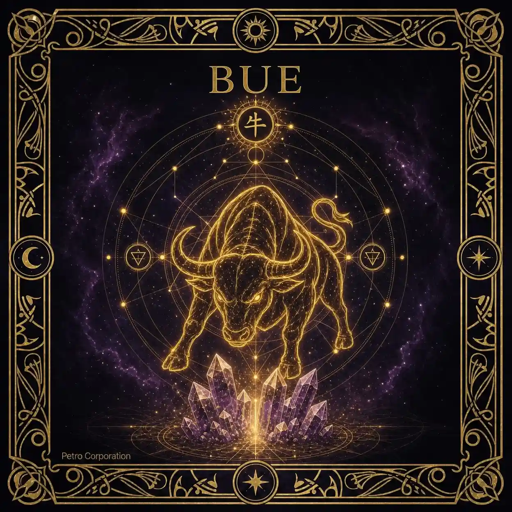
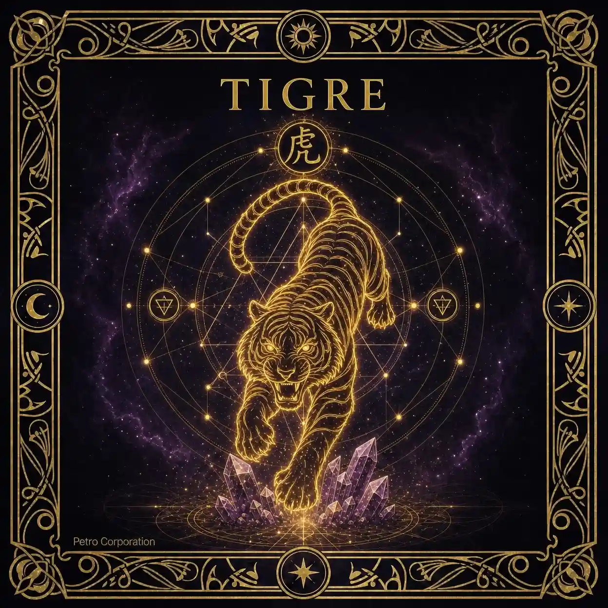
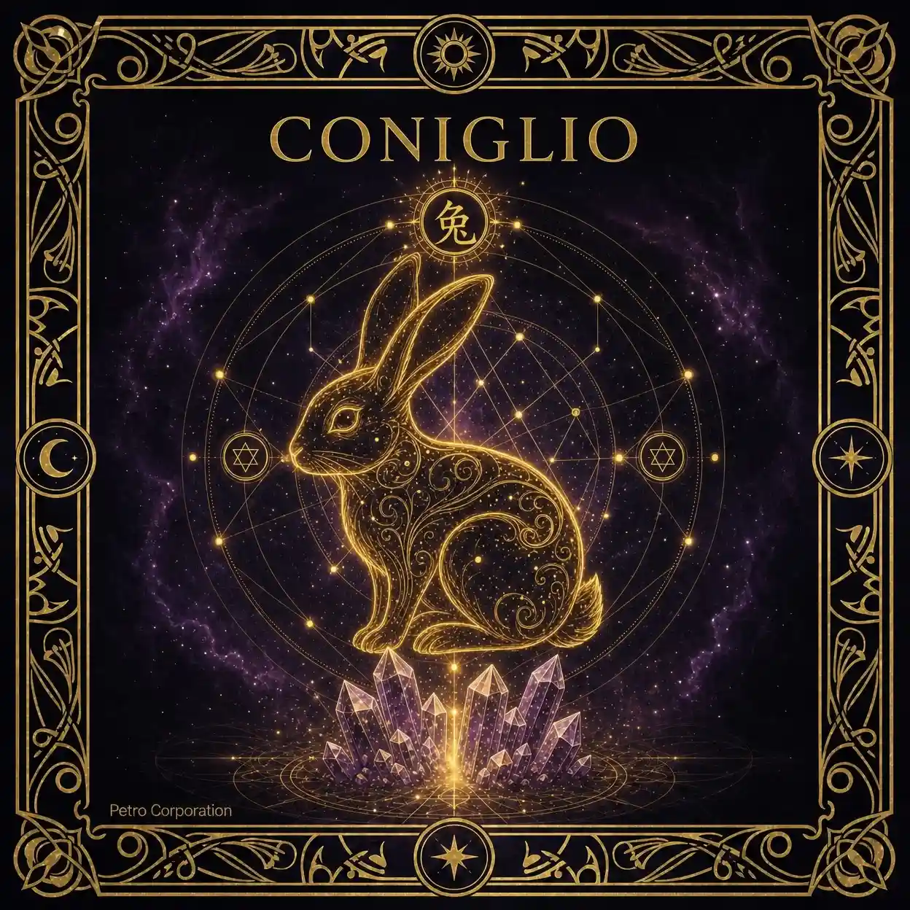
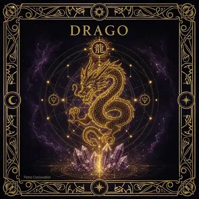
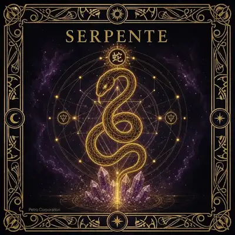
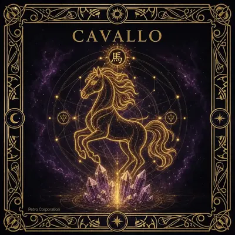
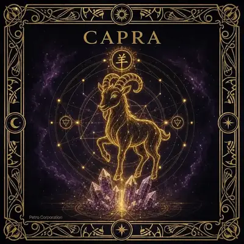
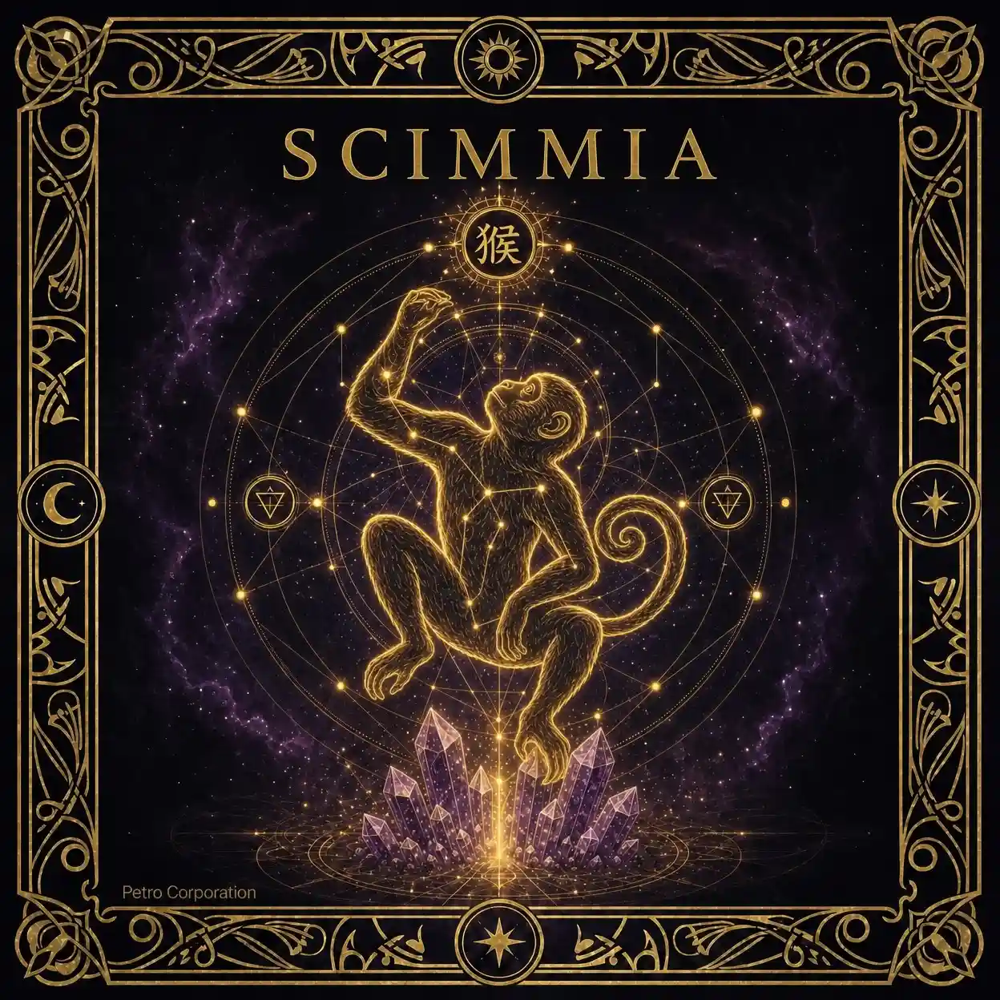
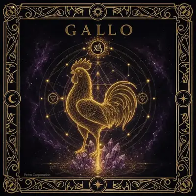
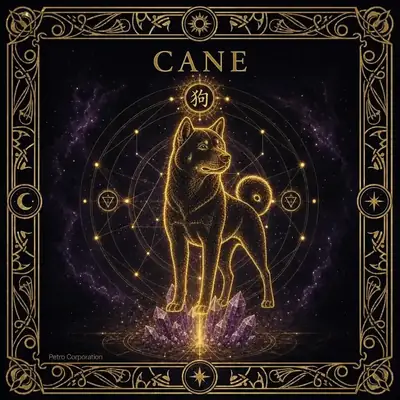
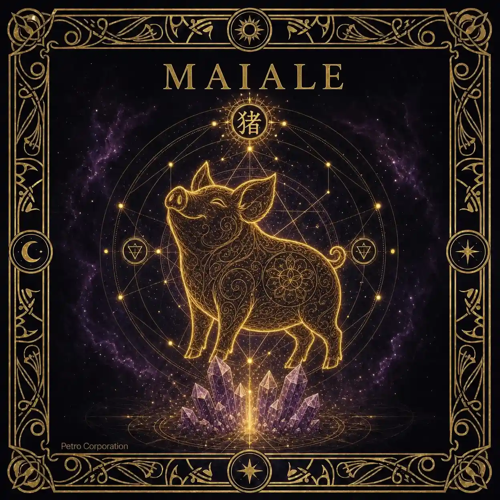
⚠️ Nota sul Capodanno Cinese: Il ciclo zodiacale cinese inizia con il Capodanno lunare, che cade tra fine gennaio e metà febbraio — non il 1° gennaio. Se sei nato prima del Capodanno cinese del tuo anno, il tuo animale potrebbe essere quello dell'anno precedente.
Per un calcolo preciso considera la data esatta del Capodanno cinese del tuo anno di nascita. Il 2026, ad esempio, inizia il 17 febbraio con l'Anno del Cavallo di Fuoco.